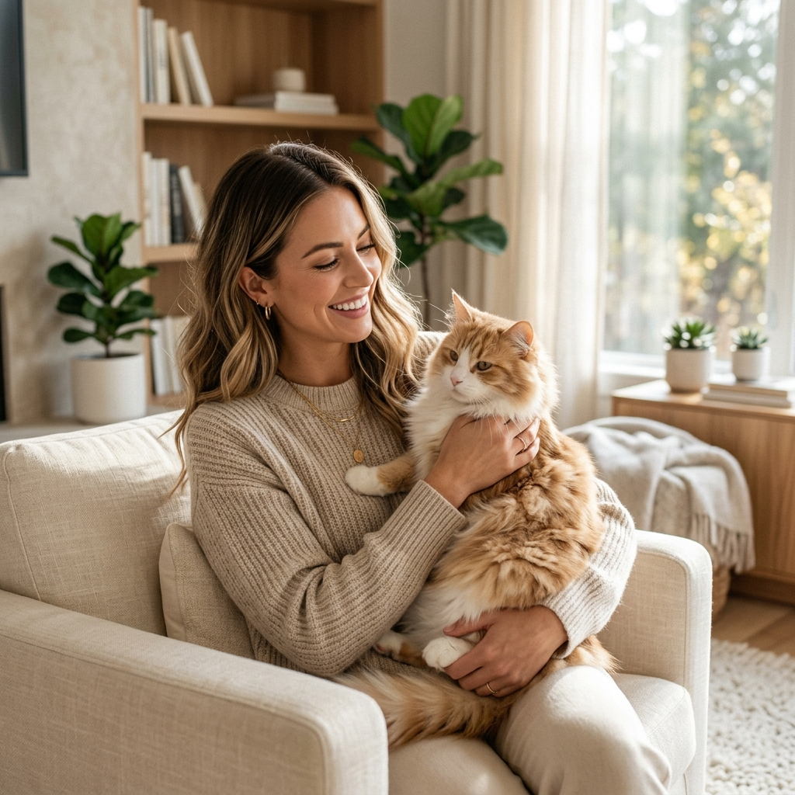

Momentos Rrr-Preciosos
A beleza da vida com felinos capturada em imagem


Uma verdadeira mãe de pet, apaixonada pelo universo felino, pelo ronronar e pelas patinhas macias. Bem-vindo ao meu cantinho especial dedicado aos seres mais elegantes do planeta.

Desde pequena, sempre fui fascinada pela personalidade única dos gatos. Eles nos ensinam sobre limites, carinho no momento certo e a importância de apreciar os pequenos momentos – como dormir sob um raio de sol na janela na companhia de um felino peludo.
A beleza da vida com felinos capturada em imagem